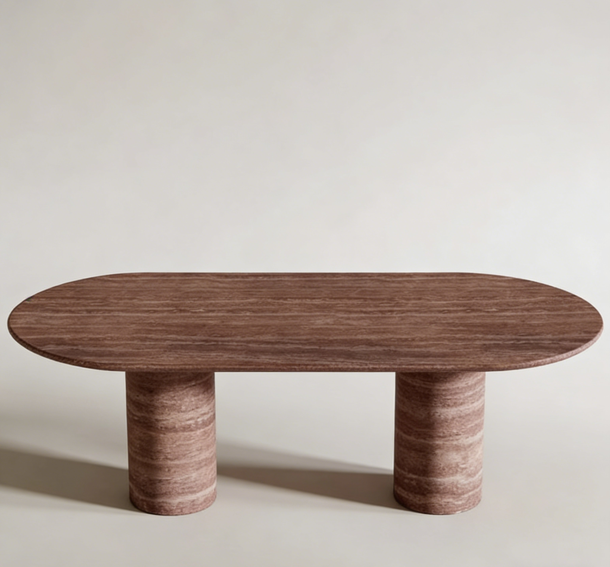
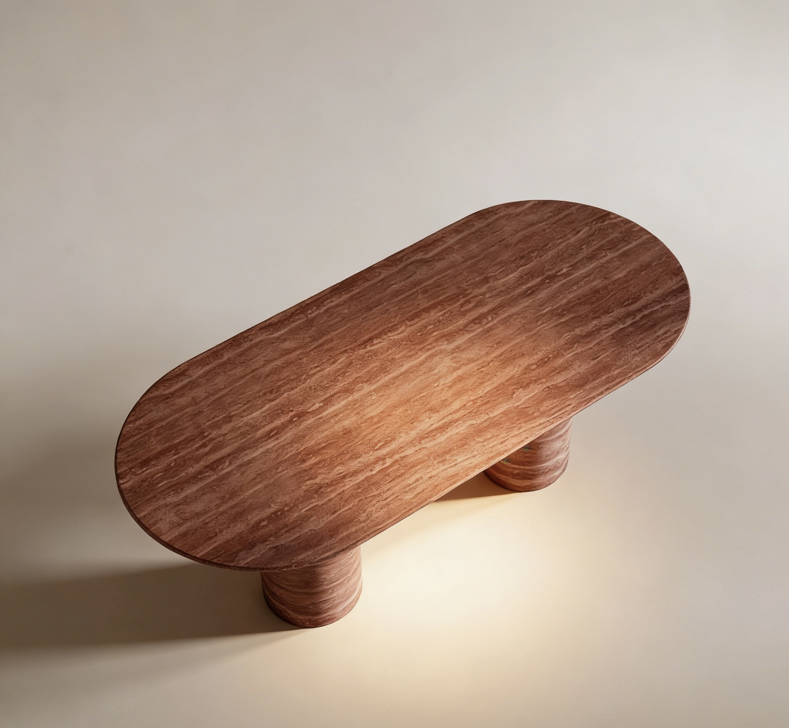
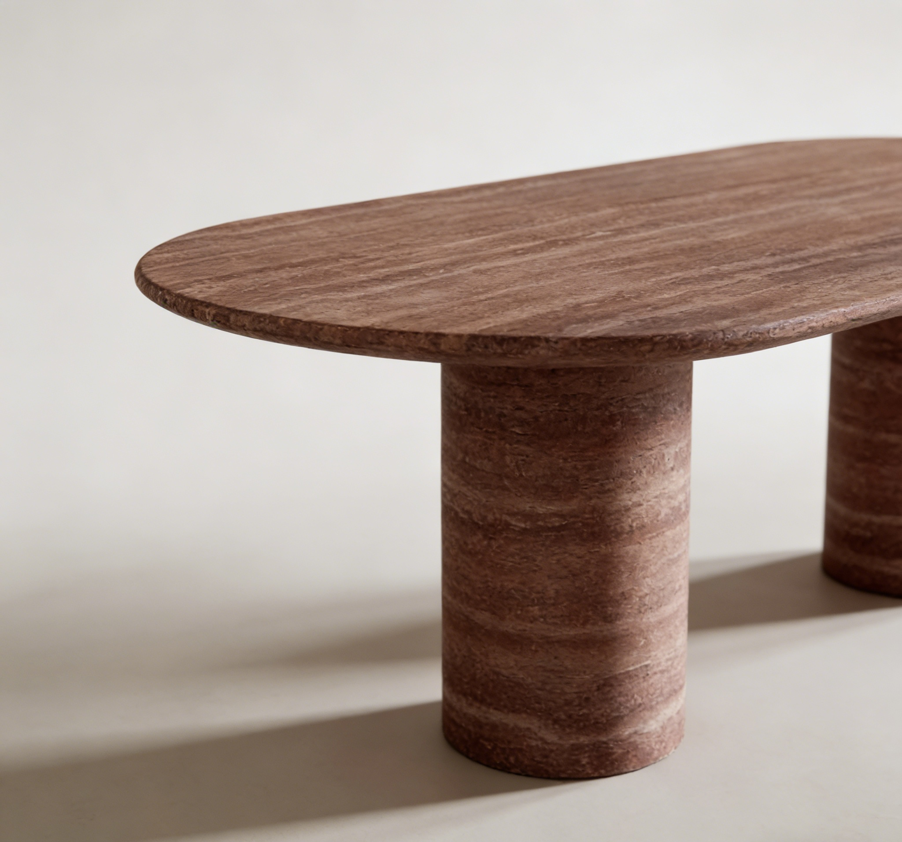

Back to products
MaterialNatural Red Travertine Marble
FinishFilled or unfilled, honed, polished, or sealed finish
MOQ1 piece custom order
Lead Time25-50 days after confirmation
Red Travertine Dining Table
Red Travertine Dining Table
A red travertine marble dining table designed for living rooms that need warm natural stone texture and a memorable furniture centerpiece.
Send your target size, quantity, finish, and reference photo or drawing for factory review.
Product Overview
Built around your drawing, material, and market requirement.
This red travertine marble dining table is designed for living rooms and refined interiors that need a warmer, more expressive natural stone direction. Table size, stone texture, edge detail, base structure, surface finish, and export packing can be customized before production.
MaterialNatural Red Travertine Marble
UsageLiving Room, Dining Room, Villa, Hotel, Interior Project
FinishFilled or unfilled, honed, polished, or sealed finish
MOQ1 piece custom order
Lead Time25-50 days after confirmation
Applications
Where buyers typically use this product.
Use these directions to match the product to your collection, project type, or target market before requesting a quote.
Custom Options
Tell us what you need to change before production starts.
Most buyers confirm size, finish, structure, and packing first. Use this section to identify the details you want quoted or adjusted.
- Custom dining table length, width, and height
- Filled or unfilled red travertine marble surface
- Matched natural texture for tabletop and base
- Custom edge detail and sculptural base structure
- Reinforced export wooden crate packing for heavy stone furniture
Buyer Questions
Common questions before ordering custom stone products.
These are the questions buyers usually ask before moving from reference stage to quote confirmation and production review.
Can the red travertine marble dining table size be customized?
Yes. We can produce the table according to your living room size, drawing, or reference photo.
Can I choose the red travertine texture before production?
Yes. For custom orders, we can share stone photos or videos before cutting so you can confirm the material direction.
How do you pack a heavy stone dining table?
We use reinforced wooden crates, inner foam, corner protection, and export packing methods for heavy natural stone furniture.